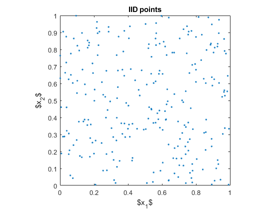

Contents
Quasi-Monte Carlo
IID sampling provides a mechanism to simulate any distribution and enables the use of Monte Carlo methods. But samples can be drawn differently, to decrease variance and reduce the computational cost. This techniques give name to new class of methods for estimating random probabilities: Quasi-Monte Carlo methods.
This script simply presents in a visual way some differences between IID sampling (used in Simple Monte Carlo) and other two Quasi-Monte Carlo sampling techniques. Nevertheless, the biggest difference is that Quasi-Monte Carlo is only IID in appearance.
Consider the problem of sampling uniformly on the unit cube, ![$[0,1]^d$](QMC_eq14367187845680948071.png) . For illustration is chosen.
. For illustration is chosen.
d = 2; %dimension n = 256; %number of samples
IID
Here are IID samples. This represents the true aspect of IID sampling. But keep in mind that these aren't either completely random, but have been generated from a sequence.
xIID = rand(n,d); % uniform (quasi-)random numbers plot(xIID(:,1),xIID(:,2),'.') % plot the points xlabel('$x_1$') % and label ylabel('$x_2$') % the axes title('IID points') axis square % make the aspect ratio equal to one
Shifted lattice node sets
One set of more evenly distributed points are node sets of integration lattices . They look like a tilted grid. Here is an example with a shift modulo one.
% the first n rank-1 lattice node sets, shifted xLattice = mod(bsxfun(@plus,gail.lattice_gen(1,n,d),rand(1,d)),1); figure plot(xLattice(:,1),xLattice(:,2),'.') % plot the points xlabel('$x_1$') % and label ylabel('$x_2$') % the axes title('Rank-1 lattice node set') axis square % make the aspect ratio equal to one
Scrambled Sobol' points
Another way to sample more evenly is to use Sobol' points. Sobol' points are just a case of digital nets generated using base 2. Here is an example of scrambled and shifted Sobol' points. They are also random, but not IID.
% create a scrambled Sobol object sob = scramble(sobolset(d),'MatousekAffineOwen'); figure xSobol = net(sob,n); % the first n points of a Sobol' sequence plot(xSobol(:,1),xSobol(:,2),'.') % plot the points xlabel('$x_1$') % and label ylabel('$x_2$') % the axes title('Sobol'' points') axis square % make the aspect ratio equal to one
Author: Alejandro Madriñán Fernández